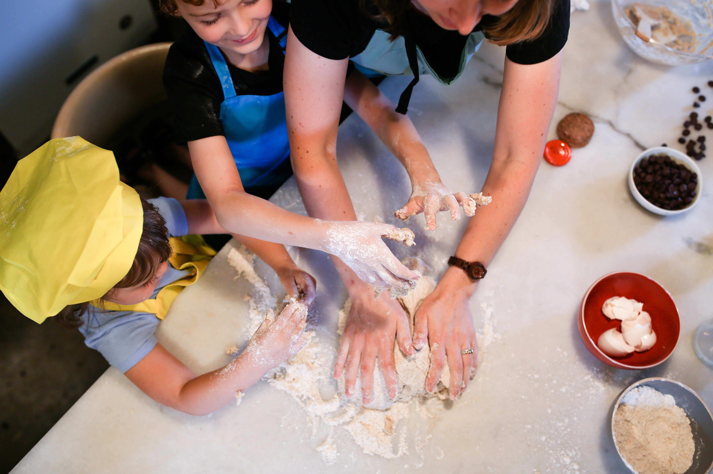
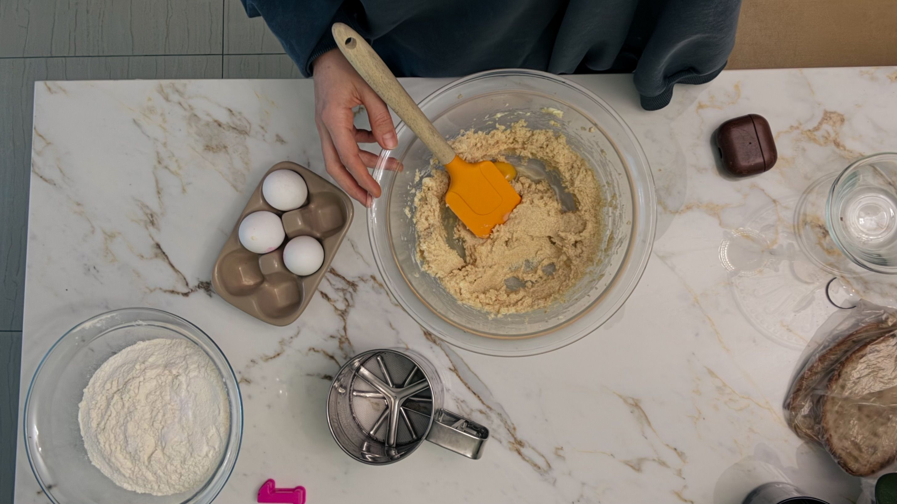

Fresh Homemade Treats Every Day

Sweet Caro's Bakery began as a small hobby while I was a stay-at-home mom. I wanted to spend my time doing something creative, so I started baking homemade breads, pastries, cakes, and cookies for my family and friends.
As more people enjoyed my baking, I decided to share my creations online and began accepting custom orders. Every recipe is made with care using fresh, high-quality ingredients, including organic ingredients whenever possible.

Today, Sweet Caro's Bakery continues to grow with the goal of providing delicious homemade treats that bring happiness to every customer. What started as a simple hobby has become a dream of owning a bakery known for quality, freshness, and homemade flavor.